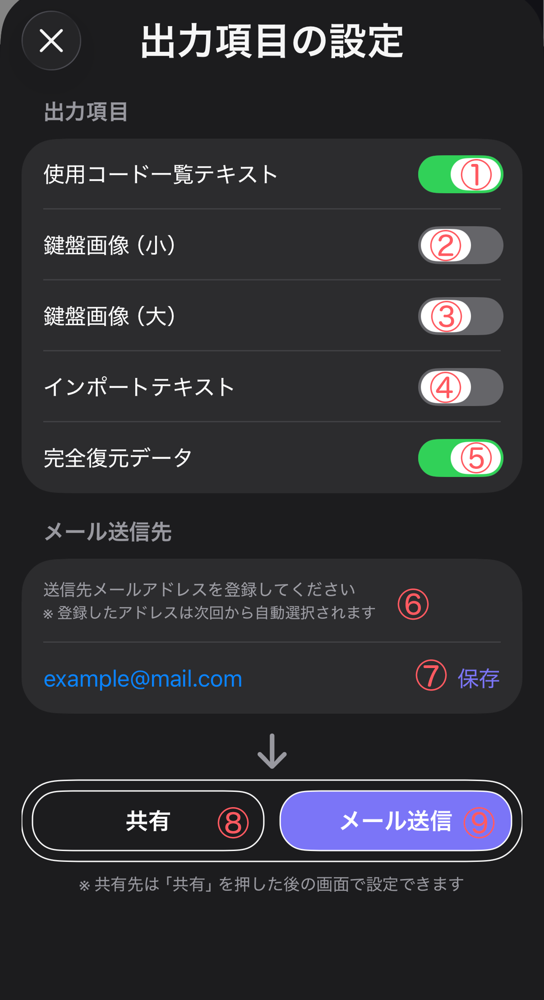

メモページをメールや共有機能で送信する方法を説明します
メモページを送信する前に、どの内容を出力するかを設定できます。
送信方法は 共有 と メール送信 の2種類があります。
下の画面では、送信するデータの種類、送信先メールアドレス、送信方法を設定できます。

① 使用コード一覧テキスト
メモ内で使用されているコードを一覧テキストとして出力します。
② 鍵盤画像（小）
コンパクトなサイズの鍵盤画像を出力します。
コードの押さえ方を簡単に確認できます。
③ 鍵盤画像（大）
大きなサイズの鍵盤画像を出力します。
オンベースコードを含めた鍵盤表示になります。
④ インポートテキスト
メモのコード進行をテキスト形式で出力します。
このテキストはM-Pianoのインポート機能で再利用できます。
⑤ 完全復元データ
メモページを .mpmemo ファイルとして出力します。
このファイルをM-Pianoで開くと、メモページを完全に復元できます。
⑥ メール送信先
送信先メールアドレスを登録できます。
登録したメールアドレスは次回から自動選択されます。
⑦ 保存
入力したメールアドレスを保存します。
⑧ 共有
iOSの共有機能を使用して、AirDrop・メッセージ・他のアプリなどへ送信できます。
⑨ メール送信
設定したメールアドレスへ直接メールで送信します。
.mpmemo は、M-Piano のメモページを共有するための専用ファイルです。
受け取ったユーザーがこのファイルを開くと、M-Pianoが起動してメモページをインポートできます。
バンドメンバーや友人とコード進行を共有したいときに便利です。
共有先は 共有 を押した後の画面で設定できます。
メール送信では、登録した送信先を使って直接送信できます。